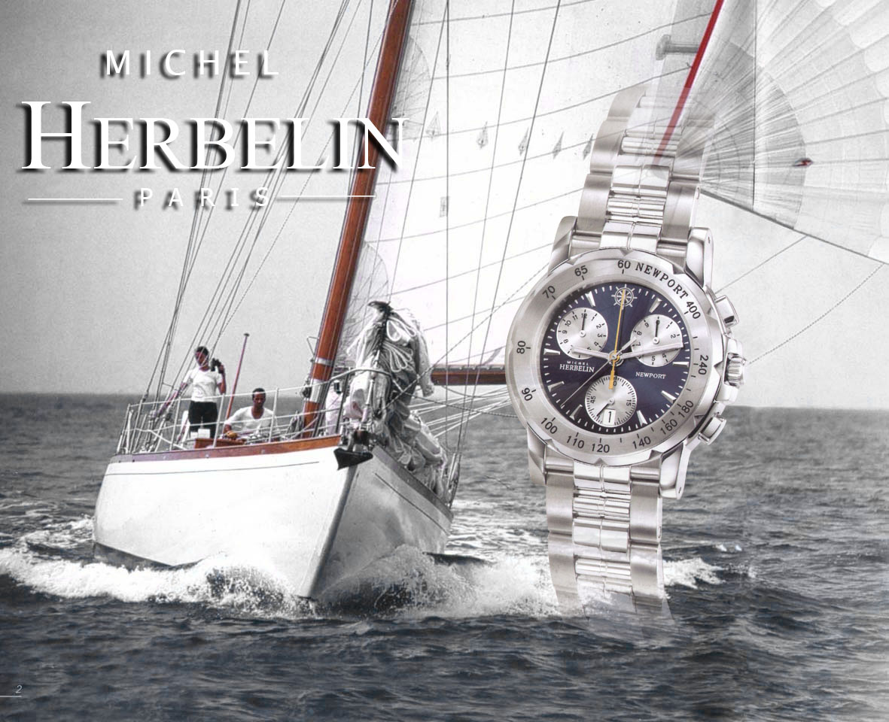

I chose this Photoshop assignment because for one thing it's like a welcoming. Hello! Is what the image seems to scream to me! Welcome to my world! A world that is made of lines and the colors that fill the lines are to distract the emptiness it holds.


For the first row I chose two water element-like Photoshop features. The entire row relates to me because water symbolizes how calm I could be, but also how outrages and uncontrollable I could be as well. The middle photo, where I Photoshopped Jennifer Lawrence face onto an Aveeno add and, I did that because it shows how silly I could be. The photo located to the left of the Jennifer Lawrence add is a guy taking a photo-sort of like he's taking a photo of her which represents me because I don't care how I act in front of anyone in terms to if I have to appease them in anyway (unless it's respect-wise).


For the second row it's about the different colors are incorporated with each other to capture the attention. It's interesting how vibrant colors have an effective roll in how we see the world.